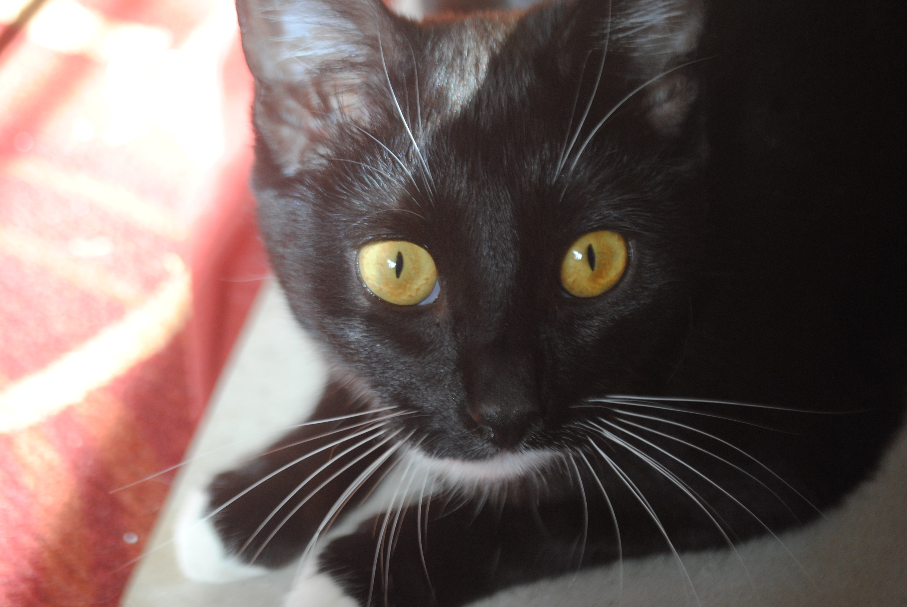
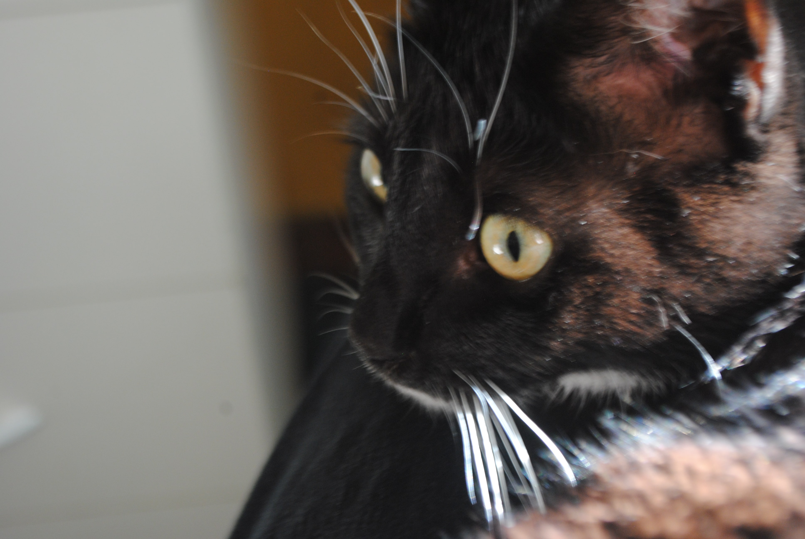

Welcome!
22/08/2021
Hello and welcome here, the page that has just been made. Let me tell you about this place.

Why hello there and welcome to this cute little website which I made not so long ago because I thought it’d be interesting. Nothing much to find here just for now. In fact, this is yet only a static website with no programming behind at all. This means that this post was written not here, but on a piece of paper with my own hands... Full of tears, I was sitting in a cold room trying just to remember what it feels to be happy, when with the last stroke of my hand, I finished the document and with not much trouble transported it to these places, which are plain html files. So this is considered to be an alpha version of this website and there is so much to go through, but I shall keep you informed on all the progress I will be making right here.
But for now, I should tell you of this place in detail, shant I? Let’s start with the page where you probably found this post, that should be the homepage. And indeed a home this will be... at least for me. Here you will be able to find all sorts of stuff, my previous works of web design, everything new about this place, my contacts in a very convenient form and all the publications I will be making on this platform. And I already can hear my fingers banging on the keyboard, while I’m trying to copy the same post to three different places. Doing this manually is painful, but I’m working on it, don’t you worry.
There is the blog page. Try and find the same post that you’re reading right now over there. And it is there. Magical, isn’t it? I will be making one more publication on what I’m going to write there. For now, it’s just a place where all the blog posts are.
The third page is called “About Me”. It is actually about the website, not me. This means the name is probably bad and I should change it, but I’ve already mentioned it and I don’t want to. Everything you need to know is not there, but there is some information on this website you would want to get familiar with, perhaps. Also my contacts and the spinning thingy, you’re welcome.
I do plan to add more pages here with more content. And I will be happy to do so, it’s just not that easy to do it so fast. I will tell you if something happens, though.
I will be seeing you here next time, bye bye.
P.S. Yes, a part of the name of the website is a swear word in Russian. It's an alpha, I'll change it.